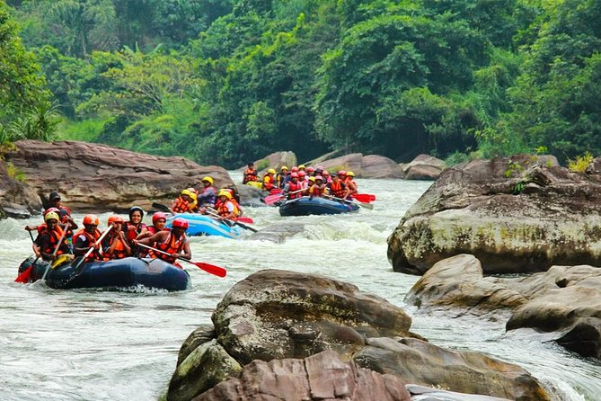
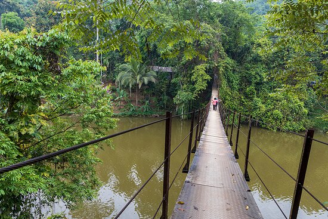
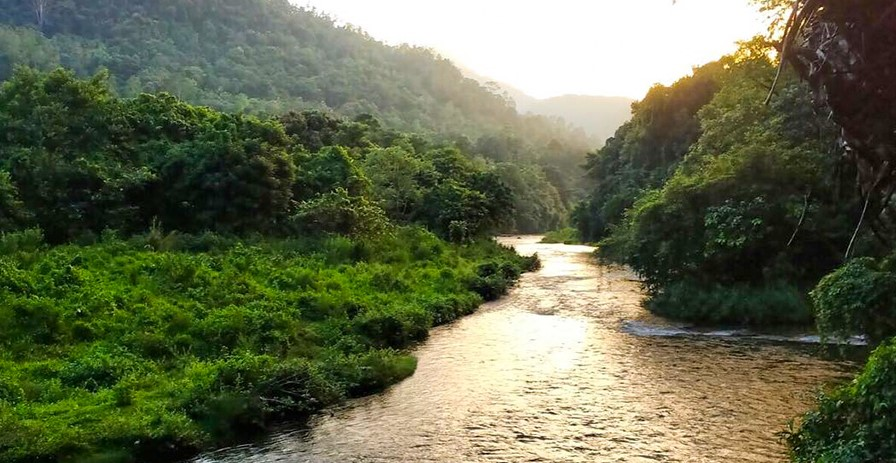
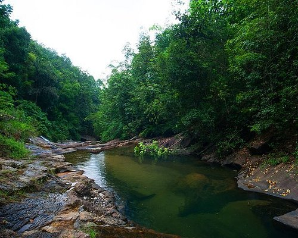

Key Attractions

Experience thrilling white-water rafting on the Kelani River, surrounded by pristine rainforest and rapids.

Discover hidden waterfalls for swimming, photography, and connecting with nature in peaceful surroundings.

Walk across historic suspension bridges and enjoy scenic views of the river and jungle canopy.

Visit traditional villages to experience local culture, crafts, and food in the rainforest setting.

Hike trails in the lush rainforest, spot wildlife, and enjoy the serene jungle environment.